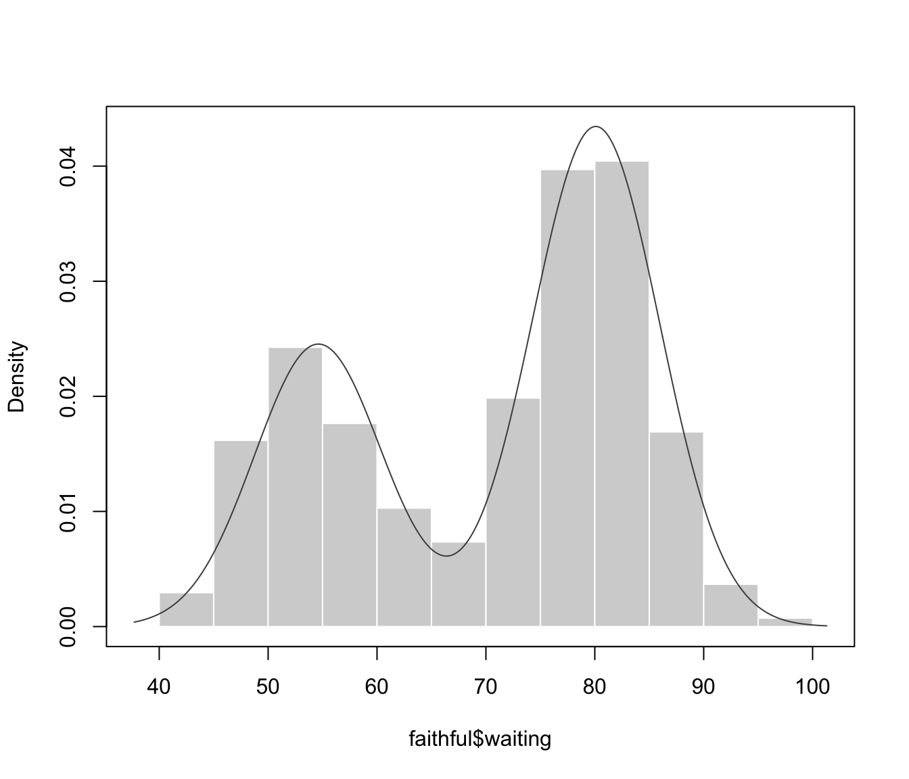
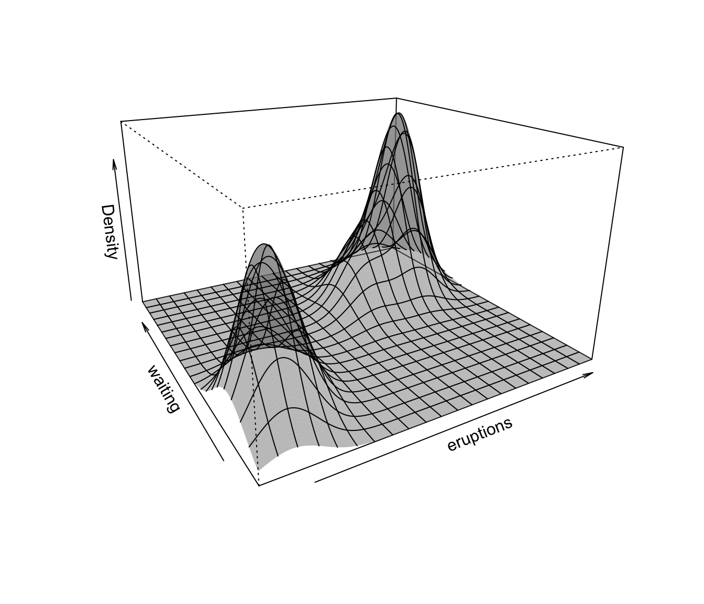

Density Estimation via Model-Based Clustering
densityMclust.RdProduces a density estimate for each data point using a Gaussian finite
mixture model from Mclust.
densityMclust(data, …)
Arguments
| data | A numeric vector, matrix, or data frame of observations. Categorical variables are not allowed. If a matrix or data frame, rows correspond to observations and columns correspond to variables. |
|---|---|
| … | Additional arguments for the |
Value
An object of class densityMclust, which inherits from
Mclust, is returned with the following slot added:
The density evaluated at the input data
computed from the estimated model.
References
Scrucca L., Fop M., Murphy T. B. and Raftery A. E. (2016) mclust 5: clustering, classification and density estimation using Gaussian finite mixture models, The R Journal, 8/1, pp. 205-233.
Fraley C. and Raftery A. E. (2002) Model-based clustering, discriminant analysis and density estimation, Journal of the American Statistical Association, 97/458, pp. 611-631.
Fraley C., Raftery A. E., Murphy T. B. and Scrucca L. (2012) mclust Version 4 for R: Normal Mixture Modeling for Model-Based Clustering, Classification, and Density Estimation. Technical Report No. 597, Department of Statistics, University of Washington.
See also
Examples
#> ------------------------------------------------------- #> Density estimation via Gaussian finite mixture modeling #> ------------------------------------------------------- #> #> Mclust E (univariate, equal variance) model with 2 components: #> #> log-likelihood n df BIC ICL #> -1034.002 272 4 -2090.427 -2099.576#> ------------------------------------------------------- #> Density estimation via Gaussian finite mixture modeling #> ------------------------------------------------------- #> #> Mclust E (univariate, equal variance) model with 2 components: #> #> log-likelihood n df BIC ICL #> -1034.002 272 4 -2090.427 -2099.576 #> #> Mixing probabilities: #> 1 2 #> 0.3609461 0.6390539 #> #> Means: #> 1 2 #> 54.61675 80.09239 #> #> Variances: #> 1 2 #> 34.44093 34.44093#> ------------------------------------------------------- #> Density estimation via Gaussian finite mixture modeling #> ------------------------------------------------------- #> #> Mclust EEE (ellipsoidal, equal volume, shape and orientation) model with 3 #> components: #> #> log-likelihood n df BIC ICL #> -1126.326 272 11 -2314.316 -2357.824#> ------------------------------------------------------- #> Density estimation via Gaussian finite mixture modeling #> ------------------------------------------------------- #> #> Mclust EEE (ellipsoidal, equal volume, shape and orientation) model with 3 #> components: #> #> log-likelihood n df BIC ICL #> -1126.326 272 11 -2314.316 -2357.824 #> #> Mixing probabilities: #> 1 2 3 #> 0.1656784 0.3563696 0.4779520 #> #> Means: #> [,1] [,2] [,3] #> eruptions 3.793066 2.037596 4.463245 #> waiting 77.521051 54.491158 80.833439 #> #> Variances: #> [,,1] #> eruptions waiting #> eruptions 0.07825448 0.4801979 #> waiting 0.48019785 33.7671464 #> [,,2] #> eruptions waiting #> eruptions 0.07825448 0.4801979 #> waiting 0.48019785 33.7671464 #> [,,3] #> eruptions waiting #> eruptions 0.07825448 0.4801979 #> waiting 0.48019785 33.7671464#> ------------------------------------------------------- #> Density estimation via Gaussian finite mixture modeling #> ------------------------------------------------------- #> #> Mclust VEV (ellipsoidal, equal shape) model with 2 components: #> #> log-likelihood n df BIC ICL #> -215.726 150 26 -561.7285 -561.7289 #> #> Mixing probabilities: #> 1 2 #> 0.3333319 0.6666681 #> #> Means: #> [,1] [,2] #> Sepal.Length 5.0060022 6.261996 #> Sepal.Width 3.4280049 2.871999 #> Petal.Length 1.4620007 4.905992 #> Petal.Width 0.2459998 1.675997 #> #> Variances: #> [,,1] #> Sepal.Length Sepal.Width Petal.Length Petal.Width #> Sepal.Length 0.15065114 0.13080115 0.02084463 0.01309107 #> Sepal.Width 0.13080115 0.17604529 0.01603245 0.01221458 #> Petal.Length 0.02084463 0.01603245 0.02808260 0.00601568 #> Petal.Width 0.01309107 0.01221458 0.00601568 0.01042365 #> [,,2] #> Sepal.Length Sepal.Width Petal.Length Petal.Width #> Sepal.Length 0.4000438 0.10865444 0.3994018 0.14368256 #> Sepal.Width 0.1086544 0.10928077 0.1238904 0.07284384 #> Petal.Length 0.3994018 0.12389040 0.6109024 0.25738990 #> Petal.Width 0.1436826 0.07284384 0.2573899 0.16808182# NOT RUN { plot(dens, what = "density", type = "persp", col = grey(0.9)) # }